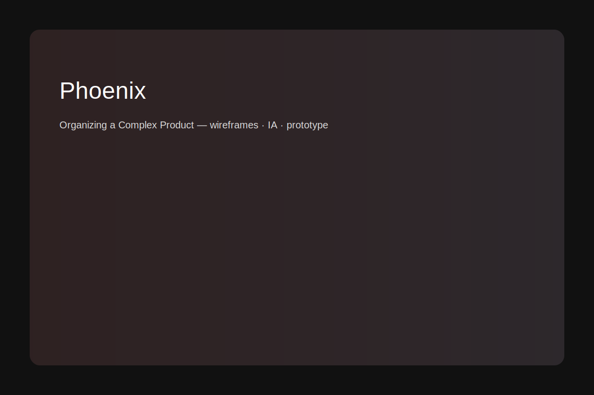

← Back to Home

Phoenix — Organizing a Complex Product
Client: State insurance rating board
Role: Led a cross-disciplinary team from research through prototyping and delivery.
Goal
Build a cloud-based system to manage and process workers compensation data and achieve independence from legacy systems.
Approach
- Led product OKR workshops to align stakeholders
- Conducted contextual observation of internal users
- Identified pain points: inaccessible interface, slow system, confusing tab structure, excessive manual work
- Designed a new information architecture mirroring the data hierarchy
- Created wireframes, mockups, and an interactive prototype
- Tested designs with multiple user rounds
- Developed a reusable component-based design system
Impact
Improved user navigation and discoverability, reduced manual data handling, and established product standards and design patterns used in development.